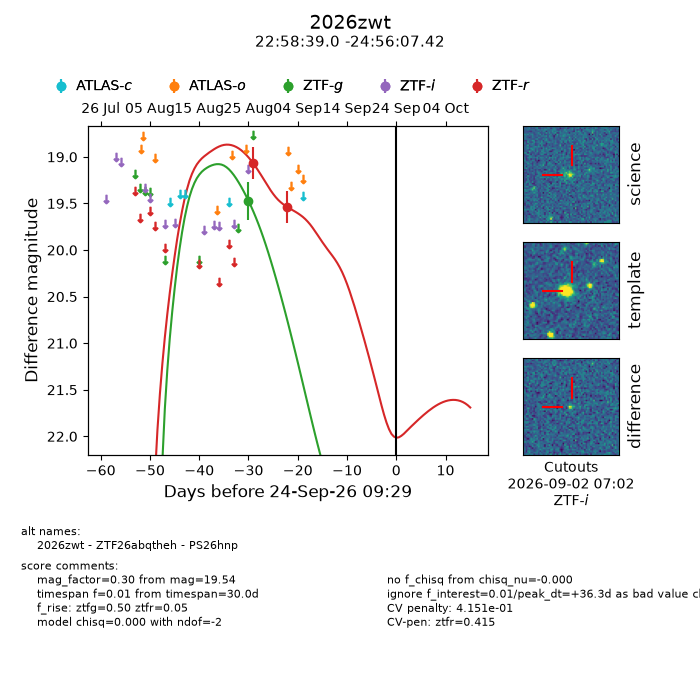
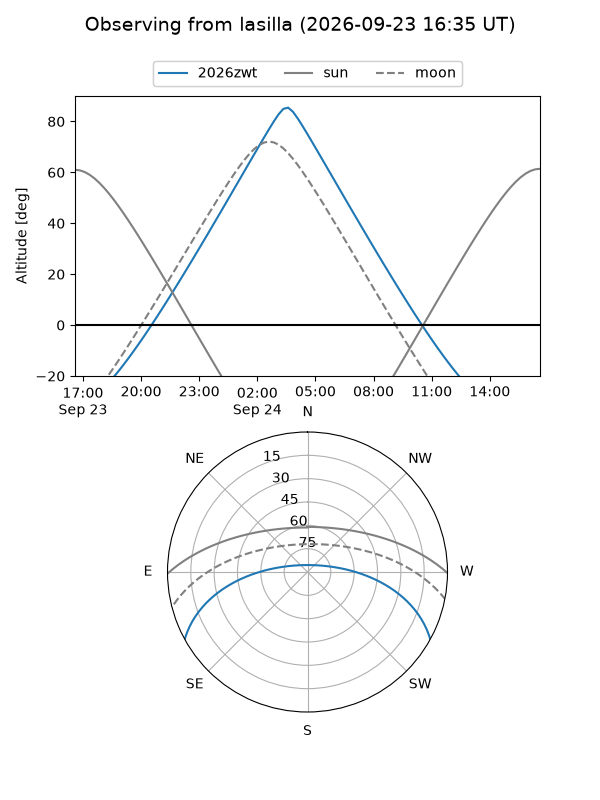
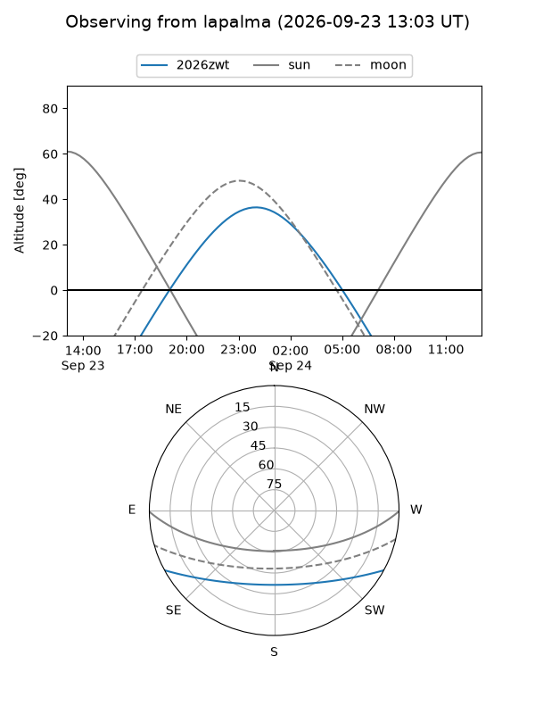
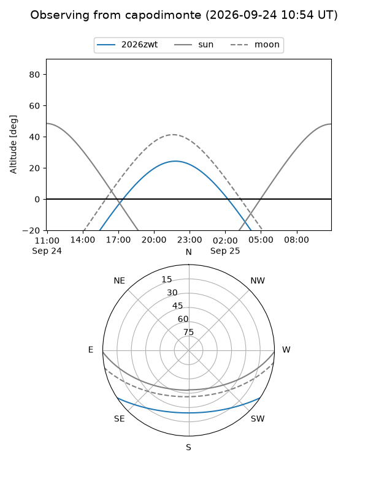
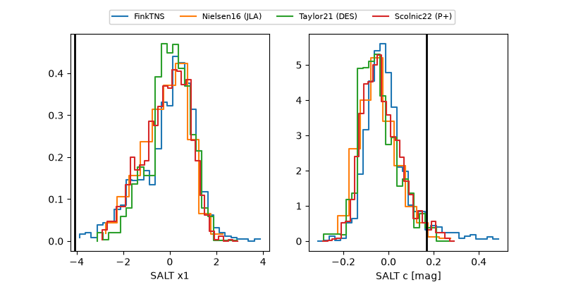

2026zwt
Target 2026zwt at 2026-09-24 09:31
Aliases and brokers:
FINK-ZTF: ztf.fink-portal.org/ZTF26abqtheh
Lasair-ZTF: lasair-ztf.lsst.ac.uk/objects/ZTF26abqtheh
ALeRCE-ZTF: alerce.online/object/ZTF26abqtheh
YSE-PZ: ziggy.ucolick.org/yse/transient_detail/2026zwt
TNS name: wis-tns.org/object/2026zwt
Direct TNS query: direct search
alt names
ZTF26abqtheh (ztf,fink_ztf)
2026zwt (tns,yse)
PS26hnp (panstarrs)
Coordinates:
equatorial (ra, dec) = 344.6626,-24.93539
equatorial (HMS+DMS) = 22:58:39.02,-24:56:07.42
galactic (l, b) = (31.4874,-64.62161)
Flags:
TNS type: nan
peak dt: +36.3
likely cv: !!
Photometry:
last ztfg=19.47, ztfr=19.54
1 ztfg, 2 ztfr detections
Lightcurve

Visibility



Additional plots
